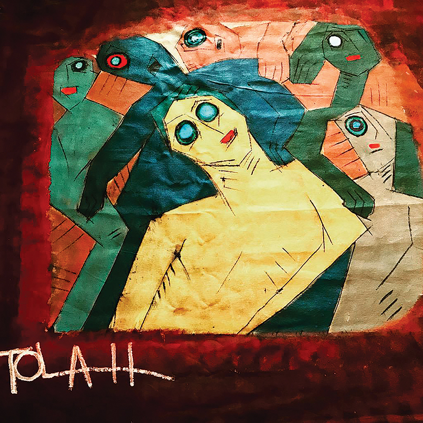

فنـان تشكيلي سعودي , من مواليد المدينة المنورة سنة 1968
نشأت أسرته في المدينة وعاش فيها حتى انتقل إلى جدة حيث يسكن هناك الآن.
وقد برز نجم الفنان زهير طوله مبكراً وأستطاع إن يحقق له موقعاً ومساحه بين الكثير ممن سبقه
بالحضور وتحقيق الذات فقد فاجأ زهير طوله الساحة التشكيليه بأعماله ذات
الخصوصية والتفرد مع تأثيره بأساليب عالميه توثقها الموسوعات مما يدل علي
ثقافته الواسعة وقدرته علي توظيفها في إبداعه دون اقتباس مباشر
أو تقليد إلا أن شخصيه الفنان طوله كانت اقرب إلي تحديد إبداعه وطبعه
باسمه [كماركه مسجله] في الساحة المحلية مما جعل مؤسسه الفن النقي
استضافة معرضه في الرياض ورعايته محققا فيه نسبة مبيعات جيده...
والفنان طوله استطاع الحضور العالمي قبل المحلي وأقام عدداً من معارضه
في باريس واجداً التقدير كما منح العديد من الميداليات والأوسمة منها وسام الشرف لمدينة ليون ووسام الصداقة الفرنسية إضافة إلى درجة التقييم الاستثنائي مع كبار
الفنانين العالميين في فرنسا وعدد من الجوائز المحلية وشهادات التقدير.
الفنان زهير طولة فنان تعبيري تسكنه روح طفل مشاكس تظهر عواطفه وانفعالاته على سطوح لوحاته بكل عفوية دون أدنى تردد،
فيصل بالتعبير إلى أقصى مداه في أعمال طوله مساحات أكثر دقة وخصوصية اللون فهو أكثر الأحيان صافي
ومعالج بألوان موحدة وهو دائما حاذق بارع يستمد إلهامه من وحي الضوء الساطع الذي ولقد لعبت المعالجة البنائية في لوحه
بدأت ميوله الفنية منذ سن مبكر
صقلها بعد دورات في التصوير الزيتي على يد الأستاذ يوسف التهامي بالمركز السعودي للفنون التشكيلية بجدة من عام 1988 إلى 1990
وما يلفت النظر تلك المعالجة في الخطوط القوية الجريئة إلحاده والخطوط الانسيابية
والمنحنية بحيث تساعد عين المشاهد على التركيز كما تعطيه علامات ونقاط استدلال من خلال رموز
وشخوص محاطة بأطواق تقطع المساحة بمسطحات تدعو للاستفهام والاستنطاق وبكل بساطه
وسواء كانت الأعمال تصويرية آو عمال أكثر تجريدية وليست اللوحة فقط هي التي ينظر إليها بل هي تنظر إلي المشاهد
أعمال طوله تنم على كثير من مشاهد الحياة اليومية
التي تتناول حالات مختلفة من الانفعالات عبر ملامح الوجوه ومشاعر من الحزن والألم ومن الفرح
زهير طولة يعالج ألوانه بشفافية وشغف بألوان صحراوية مشرقية تصدح
تناغمات حزينة تشبه حِداء البدو وأهازيج الصحراء، ويعمل على تنويع ملامس السطوح ما بين خشونة ونعومة،
تكويناته مفتوحة على الجهات الأربعة – كما هي نوافذ ثقافية- فقد سافر وجال كثيراً في أوروبا مقيماً لفترات طويلة
دارساً ومطلعاً على إبداعات الفن المعاصر ومحققاً معارض لفتت إليه الأنظار فنال أهم الجوائز وكتب عن تجربته أهم النقاد
زهير طولة ينتمي إلى أولئك الفنانين الذين نهلوا من فنون الأطفال
والبدائيين والناس الذين يرسمون من القلب آلي اليد مباشرة دون التقيد بالتعاليم والقوانين الأكاديمية الباردة ودون المرور من بوابة العقل.
الجالية العربية في البرازيل1990 المعرض الجماعي الثاني للفن المعاصر في المركز السعودي بجدة 1989 المعرض الجماعي الرابع للفن المعاصر
في المركز السعودي بجده1996 مهرجان التصوير الفوتغرافي الأول بالمركز السعودي بجده1996 معارض جاليري الجامعة بالاشتراك مع كبار الفنانين
المعاصرين في فرنسا وألمانيا وسويسرا وبلجيكا سنة 2000 انطباعات فرنسية مستوحاة من أعمال طوله وهي لطلاب المدرسة الفرنسية العالمية بجده عام2000
معرض ثلاثي جاليري رضا سمي بعصف جده عام2004 معرض ثنائي جده عام2002 سمي ب(لازمان ولإمكان) ايكواسو بالبرازيل سنة 1991 المعرض الأول
لرواد الفن في التشكيل الضوئي في صالة أرابيسك بجده1999.
إن أعجبتك إحدى هذه الرسومات - بإمكانك اختيار إحداها وتحديد مُنتج لطباعة الرسمة عليـه عن طريق متجرنا الإلكتروني
اِضغط على
 بجانب الرسمة المُراد طباعتها للإنتقال إلى
نموذج تعبئة الطلب
بجانب الرسمة المُراد طباعتها للإنتقال إلى
نموذج تعبئة الطلب